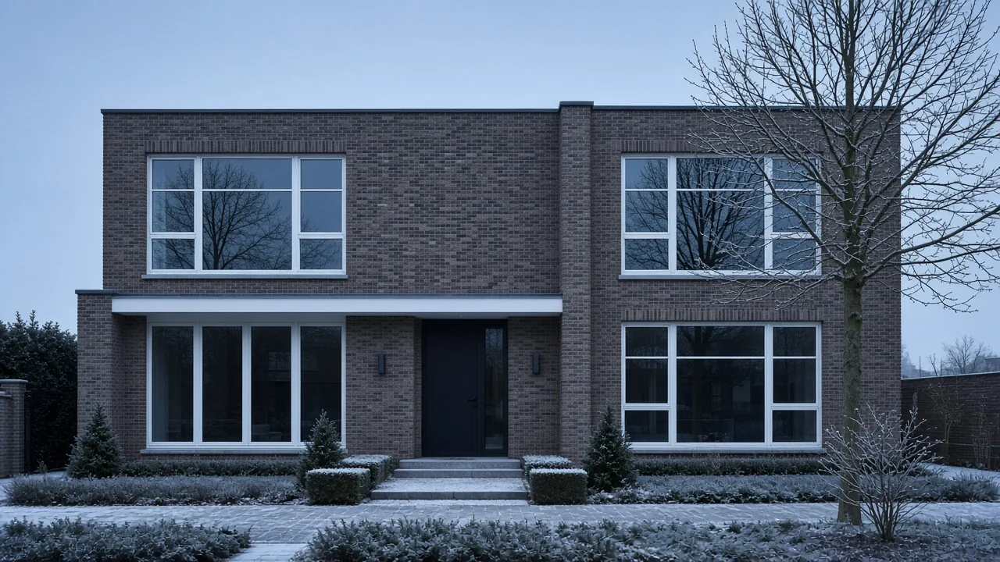
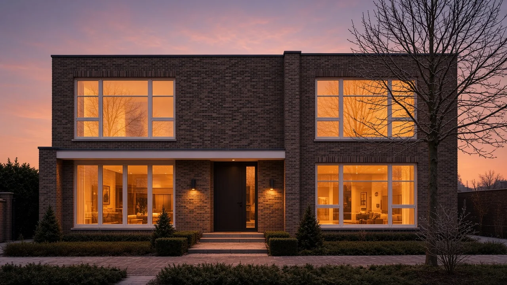

Isolerend glas · Comfort
Laat de kou buiten.
Houd de warmte binnen.
Goed glas en een degelijke plaatsing maken het verschil tussen een koud en een knus huis. Beweeg over de gevel en voel het verschil.


Comfort
58van 100 · voorbeeld
Warmteverlies
U-waarde2,8 W/m²K
Illustratief voorbeeld. De cijfers tonen het principe en zijn geen productspecificatie of garantie.
- 4,7/5 uit 51 Google-recensies
- 176+ projecten per jaar
- Zedelgem · West- en Oost-Vlaanderen
Beweeg of sleep over de gevel